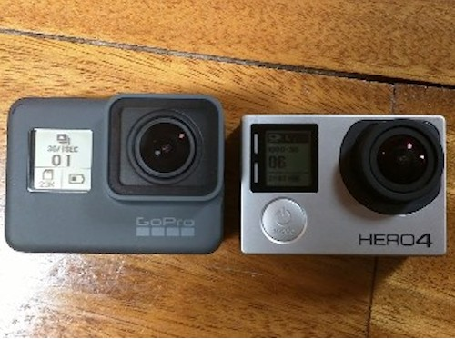
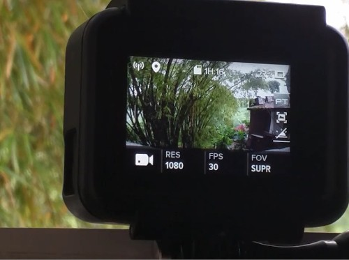
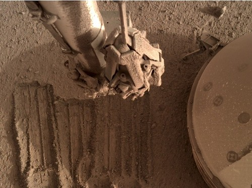

Projects

Wireless reverse engineering effort. Control your GoPro camera wirelessly, offload media, view the live feed, start/stop recording, take photos, change settings etc...
Maintained for ~8 years with updates whenever a new GoPro was released. Cameras supported: HERO2...HERO7 (WiFi, BLE optional), Fusion, HERO8, MAX, HERO9 - HERO11 (WiFi + BLE)
GoProWifiHack
Wireless reverse engineering effort. Control your GoPro camera wirelessly, offload media, view the live feed, start/stop recording, take photos, change settings etc...
Maintained for ~8 years with updates whenever a new GoPro was released. Cameras supported: HERO2...HERO7 (WiFi, BLE optional), Fusion, HERO8, MAX, HERO9 - HERO11 (WiFi + BLE)

Most used implementation of the GoPro HTTP API spec in Python. Supports Python3.5+. HERO2..HERO7 supported, HERO8 and beyond need a BLE call hack before using.
GoPro Python API
Most used implementation of the GoPro HTTP API spec in Python. Supports Python3.5+. HERO2..HERO7 supported, HERO8 and beyond need a BLE call hack before using.
AutoexecHack
GoPro hacking effort. Autoexecutable scripts used to enhance the possibilities on off the shelf consumer hardware. Out of the box usecases such as: extending the timelapse functionality, getting longer exposure times, locking exposure to fixed setting.
Media Management Tool (MMT)
Catch-all tool for importing, sorting and managing videos/photos from various action cameras and drones. Supports importing media from GoPro, DJI and Insta360 devices. Device manufacturers don't write the filenames in a way that's easy to sort when editing, so this tool will organize media by camera, date, location, importance, media type, resolution.

Python library for downloading image dumps from NASA's InSight Mars Mission Photo dump. Reverse engineered from NASA's website.
NASA InSight Photo API
Python library for downloading image dumps from NASA's InSight Mars Mission Photo dump. Reverse engineered from NASA's website.